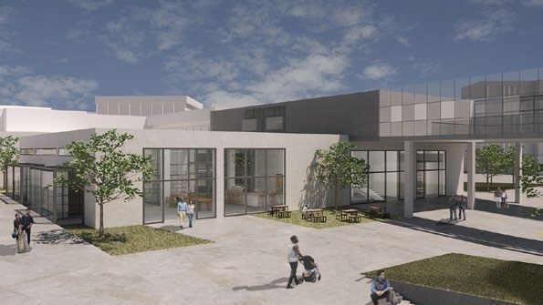
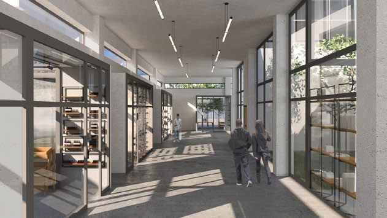
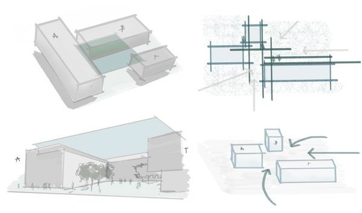
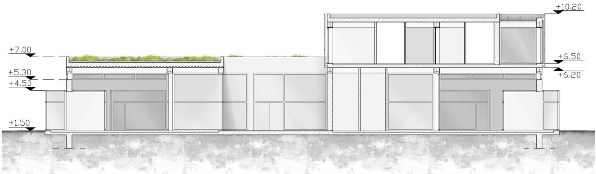
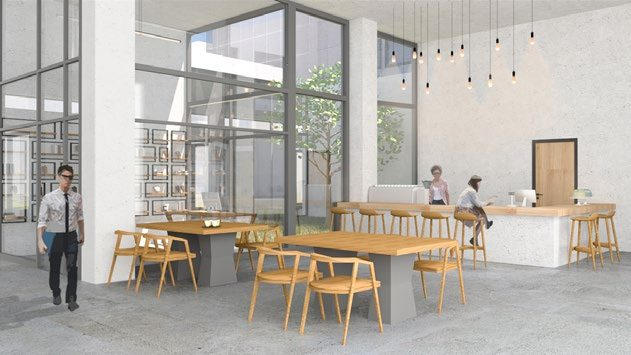
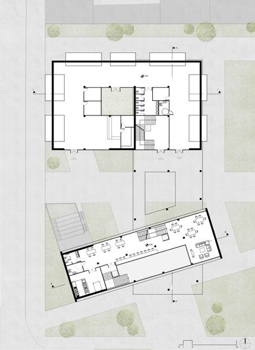
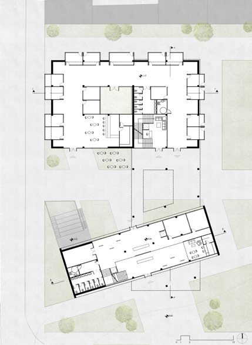
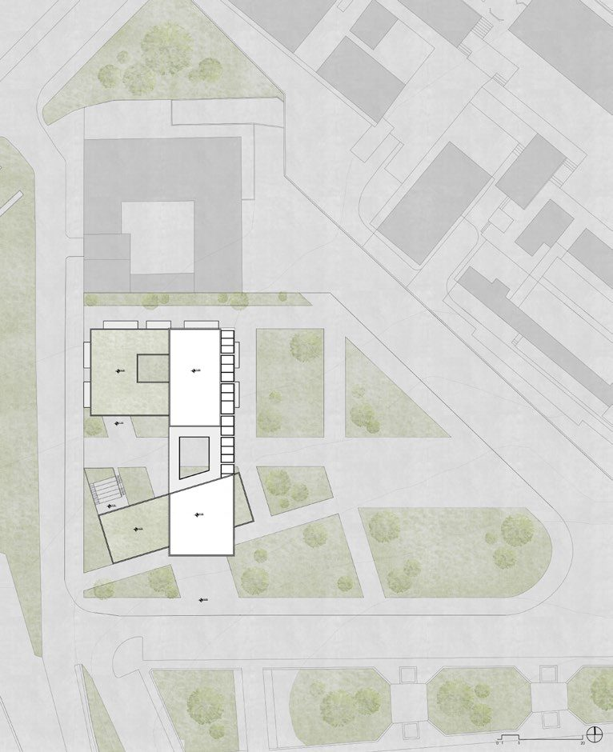
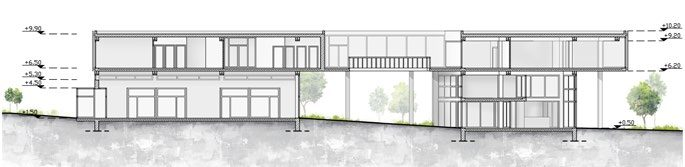
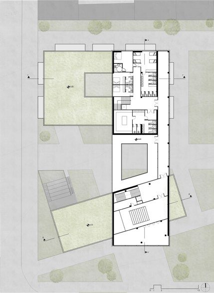

The synthesis is centered in the marketplace area of Xanthi, specifically where the fire department building stands today, near the Polytechnic University in the city's core.
(pazari / παζάρι / {n} /pazári/)
The proposal aims to rejuvenate and enhance the area through the establishment of a Cultural Centre, envisioned as an attraction for diverse age groups and a catalyst for economic, touristic and cultural development.
The concept begins with the creation of a building that will serve as a landmark, integrating leisure, cultural and commercial spaces. The design comprises three volumes: two are positioned on the ground level, aligned with the site's topography, while the third volume functions as a bridge, seamlessly connecting the ground-floor structures.



The design and arrangement of the volumes emphasize fluidity in all directions. Transparency of movement within and through the buildings was central to the concept, creating a clear and accessible flow across the site. A covered walkway extends from west to east, linking the plaza to a large green area across from the university campus.
The core of the synthesis is a public square situated between the two ground-level volumes. An open-air cinema is incorporated adjacent to the square, following the site's natural elevations.





Uses
On the ground floor, south of the primary study area, lies the complex's reception, including a Citizens Service Centre, information points, secretarial and management offices, a city exhibition and a small bar with seating areas.
The next level features a catering hall with its associated service areas. The northern section houses additional showrooms and pavilions displaying local products and a mix of traditional and contemporary crafts.
The third volume is dedicated to private functions: guest rooms and baths in the northern section, a multi-purpose hall in the southern section, linked by an outdoor bridge and walkway.


